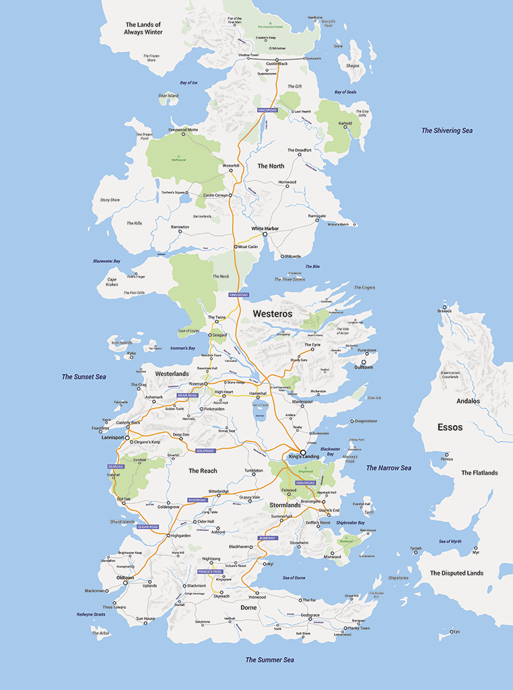

The Seven Kingdoms Welcomes All Travelers
Westeros is bordered to the west by the Sunset Sea, to the south by the Summer Sea and to the east by the Narrow Sea and Shivering Sea. The northern edges of the continent have not been charted, but are believed to extend to the northern polar ice cap. The continent shares similar geography and geometry to the real-life isle of Great Britain, and is narrow, about 900 miles wide at its widest point, but long, extending for almost 2,000 miles from the Summer Sea to the Wall that marks the northern border of the Seven Kingdoms. The extent of the wildling lands beyond the Wall are unknown.
The continent's terrain varies immensely. There are significant mountain ranges, such as the Mountains of the Moon in the Vale of Arryn, the Red Mountains of Dorne and the Frostfangs. There are also several extensive river networks, most notably the River Trident and its numerous tributaries, but also the Blackwater Rush, the White Knife, the Mander, and the Greenblood.
The climate varies between extremes of heat and cold across the large continent. The North is the only region in which snowfall is common, even in the middle of the years-long "summers". Beyond the Wall the temperature becomes even lower and hostile, forming the taiga woodlands of the Haunted Forest, reaching into the truly polar regions of the "Lands of Always Winter", in the unmapped farthest north. In the far south, the terrain becomes hotter and more arid, and Dorne contains the continent's only deserts. Notable offshore islands include Bear Island, Skagos, the Iron Islands, Tarth, Dragonstone and the Arbor.
The continent is also home to immense woodlands, such as the Haunted Forest beyond the Wall. South of the Wall, within the Seven Kingdoms, there are three major forested regions: the Wolfswood around Winterfell, the Kingswood south of King's Landing and straddling the northern border of the Stormlands, and the Rainwood in the southern half of the same region. Numerous smaller wooded areas dot the continent.
Westeros is separated from the eastern continent of Essos by the Narrow Sea and also by the island chain known as the Stepstones. According to myth, the Stepstones are a remnant of an ancestral land-bridge linking Westeros and Essos together, destroyed in a cataclysm more than ten thousand years ago.
As well as the vast eastern continent of Essos, other lands are known to exist. The Summer Islands lie to the south of Westeros and there is regular trade between the islands and the Seven Kingdoms. A forbidding, mostly-unexplored continent called Sothoryos is also known to exist to the south-east across the Summer Sea, but there is little contact between it and Westeros. Some islands are known to exist in the Sunset Sea to the west of Westeros, but the true extent of this ocean is unknown. To the east of northern Westeros lies the island of Ibben, home to traders and whalers, who occasionally trade with the Seven Kingdoms and the Free Cities of Essos.
Socialize with the Masses